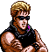

A New Beginning ...


Upon victory over the sinister Clancy, Ryu Hayabusa returned with Irene to the states, where she proceeded to leave her job behind, wanting no more of the government's interference in her life.
When cleared, Ryu and Irene decided to consumate their love after all their dark trials by marriage. And as they wed, they were visited by a ghost from their past, a ghost in the form of Robert T.S.!
After explaining his miraculous escape from the Jaquio's fortress and Castle Rock Fortress, they welcomed him as part of their union,
When cleared, Ryu and Irene decided to consumate their love after all their dark trials by marriage. And as they wed, they were visited by a ghost from their past, a ghost in the form of Robert T.S.!
After explaining his miraculous escape from the Jaquio's fortress and Castle Rock Fortress, they welcomed him as part of their union,
making him their best man. From there, Ryu, Robert, and Irene agreed to train under the Arts of the Dragon in order to restore the Clan's numbers.
Ryu used his time to study the ancient ways of the Dragon Clan, going farther than his father or ancestors ever dared. He studied the ancient disciplines and spells, learning of the formation of his lost Dragon Sword, and the power Shinobi used to defeat the Demon. Going further back, he
Ryu used his time to study the ancient ways of the Dragon Clan, going farther than his father or ancestors ever dared. He studied the ancient disciplines and spells, learning of the formation of his lost Dragon Sword, and the power Shinobi used to defeat the Demon. Going further back, he

came across a spell...a spell done only once in all of history...a spell that destroyed the impure man who dared cast it...the Body of the Dragon! Cultivating and studying this power, Ryu perfected this ancient, deadly art and found himself able to become the true Ninja Dragon. He would find that his preparation would be warranted, for though he felt safe, he never imagined that the Demons that haunted him before would return to haunt him again!

...the home of the Angel...
The fateful day was a quiet day. Robert was on his way back from reporting in to his superiors. Irene was by herself, training in the Hayabusa Family Dojo. Ryu was meditating, just as he did every morning. In his dreamstate, he found himself in unfamiliar surroundings. The presence of darkness was strong throughout this palace of a room. Suddenly, standing before him, he saw a glowing figure approaching him, holding a long, black box. The emblem of the Dragon graced the box in glittering gold. Then, the figure stopped, its glow diminished. Looking upon him with loving eyes was his father, Ken, still wearing the dark death shrouds of the Masked Devil. Before Ryu could say what he really wanted to say, Ken handed him the box. Ryu questioned him about the box, but his father assured him that his questions would be answered as soon as the box was opened. Staring in bewilderment, Ryu finally took the box. With so much he wanted to say to his late father, he stifled himself as Ken began to glow brighter than anything he'd ever seen.
"Good luck, Ninja Dragon," Ken said in parting.
Abruply awakening, Ryu looked upon the floor by his feet, shedding a tear for his father. But as he found himself looking up, he noticed a long black box, with a golden Dragon upon the lid. Astounded, just as Robert hurriedly walked through the door,, he slowly approached and opened the box. And there, shining in all its glory, lay the Dragon Sword of the Hayabusa Family! As he picked it up, he noticed a note upon the hilt of the sword. It read:
Good luck, Ninja Dragon!
With love, Ken
A sense of urgency gripped him as he thought of his wife. Ryu bolted up and ran for his bedroom, with Robert close behind. It was ransacked, the site of a battle indeed. As he looked around in panic, he heard noises that turned out to be Irene being taken away by a horde of ninjas. After chasing them down, he found that it was only a trick, laid before him by none other than his own Doppelganger! Enraged, he set off to find the answers. Averting an ambush, he was confronted by a ninja with a strange sword with power that rivaled his own. When the ninja leapt away, he left a note behind, stating that Irene was to be found with "DN."
"Good luck, Ninja Dragon," Ken said in parting.
Abruply awakening, Ryu looked upon the floor by his feet, shedding a tear for his father. But as he found himself looking up, he noticed a long black box, with a golden Dragon upon the lid. Astounded, just as Robert hurriedly walked through the door,, he slowly approached and opened the box. And there, shining in all its glory, lay the Dragon Sword of the Hayabusa Family! As he picked it up, he noticed a note upon the hilt of the sword. It read:
Good luck, Ninja Dragon!
With love, Ken
A sense of urgency gripped him as he thought of his wife. Ryu bolted up and ran for his bedroom, with Robert close behind. It was ransacked, the site of a battle indeed. As he looked around in panic, he heard noises that turned out to be Irene being taken away by a horde of ninjas. After chasing them down, he found that it was only a trick, laid before him by none other than his own Doppelganger! Enraged, he set off to find the answers. Averting an ambush, he was confronted by a ninja with a strange sword with power that rivaled his own. When the ninja leapt away, he left a note behind, stating that Irene was to be found with "DN."
As Ryu sets out to avenge her kidnappers, with Robert at his side, they are greeted by a horde of Demon Clan lackeys at his own dojo. Stockpiling his magics and weapons, he blasts through the horde to find this mysterious DN. Little did they know that Ryu and Robert will have to face this ancient menace on a global scale!
*Ninja Gaiden, Ninja Gaiden 2: Dark Sword of Chaos, and Ninja Gaiden 3: Ancient Ship of Doom, are trademark and copyright property of Tecmo Inc. Display of the images on this site are for ENTERTAINMENT PURPOSES ONLY!
I, the Guardian, am not for profit in the creation of this website and make absolutely no money for it. I do not work for Tecmo Inc., nor am I affiliated with Microsoft or Nintendo. I am simply an enthusiast of the Ninja Gaiden Series.
I, the Guardian, am not for profit in the creation of this website and make absolutely no money for it. I do not work for Tecmo Inc., nor am I affiliated with Microsoft or Nintendo. I am simply an enthusiast of the Ninja Gaiden Series.